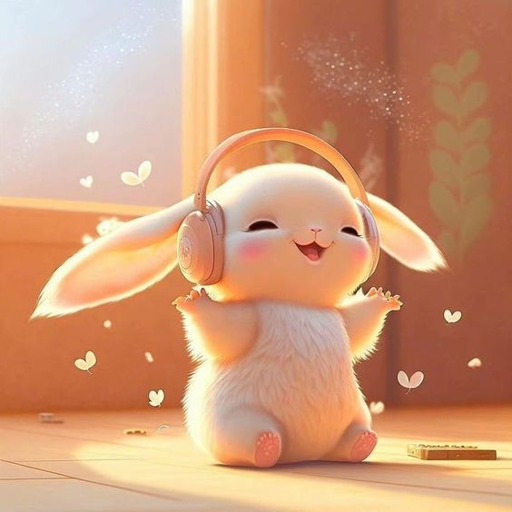
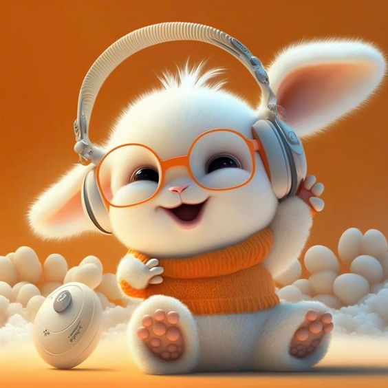
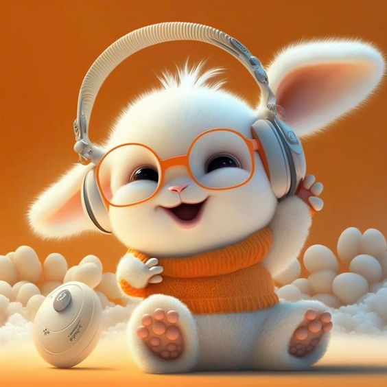
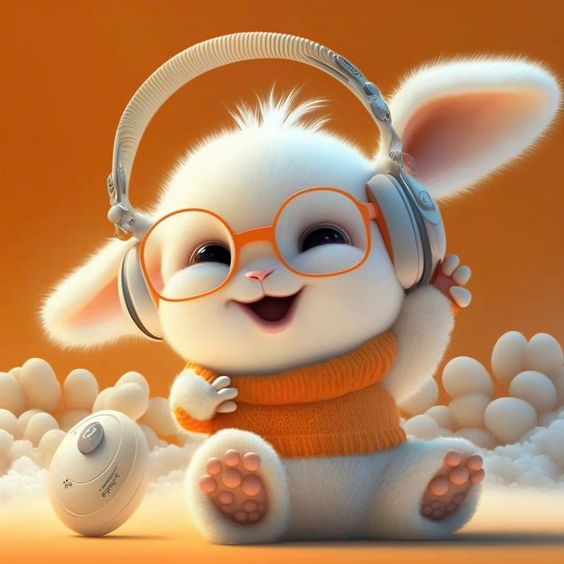

Gallery
 

Greetings! I'm Via Clariz A. Rasquero, a dedicated 3rd-year college student pursuing a Bachelor of Science in Information Technology at the Polytechnic University of the Philippines - Taguig. Join me as I share my journey through the dynamic world of information technology. I'm delighted to share my experiences and goals as I explore the convergence of academics and the ever-changing world of IT.
I like to play games.
Watching kdrama/movies is one of my hobby.
I scroll in social media when I'm bored.
I love to keep stationeries.
Listening to music makes me feel good.
Achieve a level of financial stability and independence.
Continuously enhance my knowledge and skills through advanced degrees, certifications, or lifelong learning.
Visit and experience new cultures, countries, and destinations.
Maintain a healthy lifestyle, both physically and mentally, to ensure a long and fulfilling life.
Build and sustain loving, supportive relationships with family and friends.
Embrace the challenges of my IT journey with resilience and continuous growth, fueled by the belief that every obstacle is a stepping stone toward success.
Transition into the IT industry with a focus on front-end development, acknowledging my current knowledge gaps while actively seeking opportunities for hands-on learning and skill development.
Forge a path of personal and professional development, viewing the stress and pressure as catalysts for self-discovery and growth rather than hindrances to my journey.
Contribute meaningfully to the IT industry, recognizing that success is a journey, and my commitment to the field will be the driving force behind my accomplishments.
Maintain a positive mindset, acknowledging that each experience, whether positive or challenging, contributes to my evolution as a skilled and resilient IT professional.
As a third-year student pursuing a Bachelor of Science in Information Technology, I find myself standing at the crossroads of academia and the imminent entry into the dynamic and ever-evolving industry of IT. This juncture prompts me to envision my life five years from now, contemplate my aspirations, and reflect on the worthiness of the journey I'm undertaking.
Despite my initial uncertainty about why I ended up in the field of information technology, my present commitment to continue on this path is unwavering. This choice is based on my belief that there is a God's plan directing my life. The stress and pressure I've been subjected to in recent months, and expect in the next weeks, are considered as opportunities to shape me into a resilient and capable professional.
Looking ahead, I see myself effectively transitioning into the IT professional setting. I envision myself making a significant contribution to the industry, with an emphasis on front-end development—a decision motivated by my self-awareness as a third-year student, who recognizes the gaps in my expertise. While I acknowledge that my present skill set is limited, I am motivated to get the essential practical knowledge and hands-on abilities via continual study.
The notion of entering the workforce causes me anxiety, especially given my perceived insufficiency of present abilities. However, I refuse to give in to my fear of rejection. Instead, I want to focus my job search on opportunities that match my existing skills, allowing for progressive growth and learning. I understand that my journey in IT is a continuing one, and I am open to the possibility of more education and skill development even after graduation.
While I understand the pressure that comes with starting a new job, I prefer to see this change as an opportunity for personal and professional development. I envision a future in which my salary reflects the value of my abilities and contributions to the industry. I desire to be a front-end developer, fully aware that the path to this position would take time, and I am committed to progressing at my own pace.
In conclusion, my path in IT is more than a means to a goal; it is a continual process of self-discovery and growth. The difficulties and uncertainties are not roadblocks but rather stepping stones toward a rewarding and successful profession. As I enter the field of IT, I welcome the unknown, aware that each encounter will help me grow as a talented and resilient worker.
Via is not just a teammate; she's a reliable friend who brings positive energy to every study session. Her dedication to learning and passion for IT is truly commendable. - Mark
Studying with Via is always a pleasure. She's a hardworking and friendly teammate, and her enthusiasm for IT is contagious. Together, we've tackled challenges and celebrated successes. - Chrystine Noelle
Via is the kind of teammate you can count on. As a teammate, she's supportive, and in group projects, her commitment to excellence ensures our collective success. - Sam
Being in the same team as Via has been a great experience. She's not just a talented student but also a team player who fosters a positive learning environment for everyone. - Kyla

Mark: I think it is a wise decision to prioritize achieving financial stability and independence.
Chrystine Noelle: Hi Via! Your goals are truly inspiring. Achieving financial stability and independence is an important milestone. Keep going strong!
Sam: Hey, Via! Keep working towards your goals with determination and passion!
Kyla: Exactly! They're all correct! I'm here to celebrate every milestone with you.